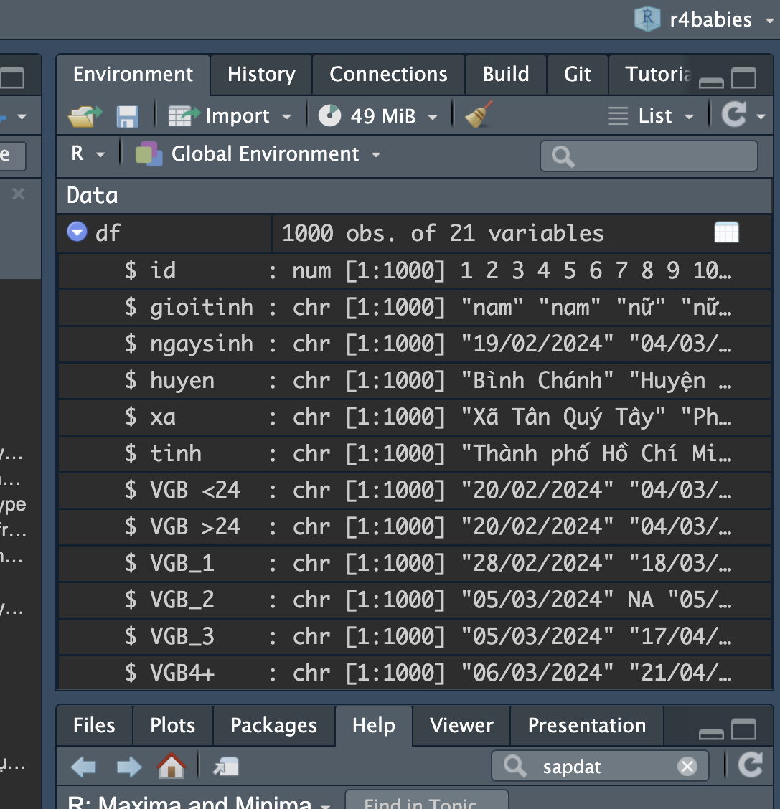

Làm sạch (p1)
R for babies
Mục tiêu
- Hiểu các thuật ngữ trong R
- Hiểu các datatype trong R
- Học các thao tác cơ bản khi làm việc với data.frame
- Học về các package hỗ trợ khi làm việc với các datatype phức tạp hơn (string, Date)
Các khái niệm trong R
Đối tượng trong R
Mọi thứ được lưu trữ trong R - bao gồm bộ dữ liệu, biến số, danh sách tên cột, kết quả đầu ra như biểu đồ - đều là các đối tượng, được gán tên và có thể được tham chiếu trong các lệnh sau đó.
Để tạo đối tượng trong R, ta dùng cú pháp sau
VD: Đọc file vaccine_data.xlsx để sử dụng trong bài học
Đối tượng trong R
Sau khi tạo các đối tượng, ta có thể thử xem giá trị được lưu trữ
[1] "data/vaccine_data.xlsx"# A tibble: 6 × 21
id gioitinh ngaysinh huyen xa tinh `VGB <24` `VGB >24` VGB_1 VGB_2
<dbl> <chr> <chr> <chr> <chr> <chr> <chr> <chr> <chr> <chr>
1 1 nam 19/02/2024 Bình Ch… Xã T… Thàn… 20/02/20… 20/02/20… 28/0… 05/0…
2 2 nam 04/03/2024 Huyện S… Phườ… Thàn… 04/03/20… 04/03/20… 18/0… <NA>
3 3 nữ 29/02/2024 Quận 12 Trun… Thàn… <NA> 01/03/20… 01/0… 05/0…
4 4 nữ 10/02/2024 Cần Giờ Xã T… Thàn… 10/02/20… 10/02/20… 19/0… <NA>
5 5 nữ 21/03/2024 Thành p… Phườ… Thàn… 22/03/20… 22/03/20… <NA> 30/0…
6 6 nam 31/01/2024 Quận 6 Xã B… Thàn… 31/01/20… 31/01/20… 14/0… <NA>
# ℹ 11 more variables: VGB_3 <chr>, `VGB4+` <chr>, HG_1 <chr>, HG_2 <chr>,
# HG_3 <chr>, `HG4+` <chr>, UV_1 <chr>, UV_2 <chr>, UV_3 <chr>,
# `UV_4+` <chr>, tinhtrang <chr>Đối tượng trong R
Lưu ý
Giá trị của một đối tượng có thể bị ghi đè bất kỳ lúc nào bằng cách chạy lệnh gán để định nghĩa lại giá trị của nó. Do đó, thứ tự của các lệnh được chạy rất quan trọng.
VD: lệnh sau sẽ ghi đè giá trị của đối tượng data_path
Câu văn trong R
Câu lệnh (command) hoặc hàm (function) chính là những câu văn trong R để giao tiếp với máy tính. Một câu lệnh trong R thường có dạng như sau:
- Tên câu lệnh: nằm trước dấu
(), thể hiện ý nghĩa câu lệnh dùng để làm gì. - Tên tham số (argument): những điều chỉnh cụ thể để máy tính hiểu rõ hơn yêu cầu của người dùng.
- Dấu
=: dùng để gán 1 giá trị cho tham số.
Câu văn trong R
Ví dụ:
- Tên câu lệnh là
max: tìm giá trị lớn nhất của 1 biến. - Các tham số là
xvàna.rm:x: là data đầu vào,x = df$idquy địnhxlà cộtidcủa bảng datadf.na.rm: lựa chọn cách giải quyết missing value (NA),na.rm = TRUEnghĩa là bỏ giá trịNAđi trước khi tìm giá trị lớn nhất.
Câu văn trong R
Loại dữ liệu (datatype) trong R
Trong R, mỗi đối tượng được quy định phải theo 1 loại dữ liệu (datatype) nhất định
| Datatype | Ý nghĩa | Ví dụ |
|---|---|---|
numeric |
dữ liệu dạng số | -1, -2, 0, 1.5, … |
logical |
dữ liệu dạng đúng/sai | [TRUE, FALSE] hoặc [1, 0] |
character |
dữ liệu dạng ký tự (hay còn gọi là string), được đặt trong dấu ngoặc kép "".đối tượng dạng ký tự thì không thể tính toán |
|
Date |
dữ liệu ngày tháng | 2024-04-01, 2024-04-02, … |
factor |
dữ liệu dạng phân loại (categorical) | giới tính: nam, nữ tỉnh thành dân tộc |
data.frame |
dữ liệu dạng bảng | |
tibble |
dữ liệu dạng bảng tương tự như data.frame, sự khác biệt chính là tibble in đẹp hơn trong R console |
Loại dữ liệu (datatype) trong R
Tip
Để kiểm tra datatype của 1 đối tượng, sử dụng lệnh class(tên_đối_tượng)
Để kiểm tra datatype của các cột trong data.frame, ta có thể sử dụng lệnh str hoặc kiểm tra tại mục Data của RStudio

Loại dữ liệu (datatype) trong R
VD: kiểm tra bằng lệnh str
[1] "tbl_df" "tbl" "data.frame"tibble [1,000 × 21] (S3: tbl_df/tbl/data.frame)
$ id : num [1:1000] 1 2 3 4 5 6 7 8 9 10 ...
$ gioitinh : chr [1:1000] "nam" "nam" "nữ" "nữ" ...
$ ngaysinh : chr [1:1000] "19/02/2024" "04/03/2024" "29/02/2024" "10/02/2024" ...
$ huyen : chr [1:1000] "Bình Chánh" "Huyện Sơn Tịnh" "Quận 12" "Cần Giờ" ...
$ xa : chr [1:1000] "Xã Tân Quý Tây" "Phường 12" "Trung Mỹ Tây" "Xã Thạnh An" ...
$ tinh : chr [1:1000] "Thành phố Hồ Chí Minh" "Thành phố Hồ Chí Minh" "Thành phố Hồ Chí Minh" "Thành phố Hồ Chí Minh" ...
$ VGB <24 : chr [1:1000] "20/02/2024" "04/03/2024" NA "10/02/2024" ...
$ VGB >24 : chr [1:1000] "20/02/2024" "04/03/2024" "01/03/2024" "10/02/2024" ...
$ VGB_1 : chr [1:1000] "28/02/2024" "18/03/2024" "01/03/2024" "19/02/2024" ...
$ VGB_2 : chr [1:1000] "05/03/2024" NA "05/03/2024" NA ...
$ VGB_3 : chr [1:1000] "05/03/2024" "17/04/2024" NA "18/03/2024" ...
$ VGB4+ : chr [1:1000] "06/03/2024" "21/04/2024" NA "02/04/2024" ...
$ HG_1 : chr [1:1000] "20/02/2024" "04/03/2024" "01/03/2024" "10/02/2024" ...
$ HG_2 : chr [1:1000] "05/03/2024" "19/03/2024" "08/03/2024" "17/02/2024" ...
$ HG_3 : chr [1:1000] "04/03/2024" NA "20/03/2024" "17/02/2024" ...
$ HG4+ : chr [1:1000] "04/03/2024" "03/04/2024" "03/04/2024" "18/02/2024" ...
$ UV_1 : chr [1:1000] "20/02/2024" "04/03/2024" "01/03/2024" NA ...
$ UV_2 : chr [1:1000] "03/03/2024" "16/03/2024" "14/03/2024" "23/02/2024" ...
$ UV_3 : chr [1:1000] "10/03/2024" "20/03/2024" NA "02/03/2024" ...
$ UV_4+ : chr [1:1000] "14/03/2024" "29/03/2024" "27/03/2024" "06/03/2024" ...
$ tinhtrang: chr [1:1000] "ngừng theo dõi" "ngừng theo dõi" "ngừng theo dõi" "theo dõi" ...Chuyển đổi datatype
Cú pháp chung cho thay đổi datatype là as.datatype()
Ví dụ như:
as.numeric()chuyển thành định dạng số.as.character()chuyển thành định dạng văn bản.as.factor()chuyển thành định dạng factor.as.Date()chuyển thành định dạng ngày.
Ngoài ra, còn có các lệnh khác để phục vụ cho các mục đích cụ thể hơn, bao gồm:
ifelse()chuyển thành định dạng logical theo điều kiện nhất địnhis.na()chuyển thành định dạng logical, các dữ liệu trống (NA) có giá trịTRUEvà ngược lại.dmy(),ymd(),mdy(), … chuyển đổi string theo các format khác nhau thành định dạng ngày
Các thao tác thông dụng với data.frame
Làm sạch tên cột
Trong R, tên cột là giá trị trên đỉnh của một cột.
Các quy tắc cho tên cột thường bao gồm:
Tên ngắn
Không có khoảng trắng (thay thế bằng dấu gạch dưới _ ).
Không có ký tự đặc biệt (&, #, <, >, …) hoặc dấu.
Không bắt đầu bằng số.
Lệnh clean_names() của package janitor được sử dụng để tự động hoá quá trình chuẩn hoá tên cột. Ngoài ra, lệnh rename() của package dplyr được sử dụng để thay đổi tên cột một cách thủ công.
Làm sạch tên cột
VD:
[1] "id" "gioitinh" "ngaysinh" "huyen" "xa" "tinh"
[7] "VGB <24" "VGB >24" "VGB_1" "VGB_2" "VGB_3" "VGB4+"
[13] "HG_1" "HG_2" "HG_3" "HG4+" "UV_1" "UV_2"
[19] "UV_3" "UV_4+" "tinhtrang" [1] "id" "gioitinh" "ngaysinh" "huyen" "xa" "tinh"
[7] "vgb_24" "vgb_24_2" "vgb_1" "vgb_2" "vgb_3" "vgb4"
[13] "hg_1" "hg_2" "hg_3" "hg4" "uv_1" "uv_2"
[19] "uv_3" "uv_4" "tinhtrang"Lấy dữ liệu theo hàng/cột
Cú pháp:
tên_bảng_dữ_liệu[hàng, cột]. Trong đó cột có thể là số thứ tự của cột hoặc tên cột.Để lấy toàn bộ hàng thì để trống cột và ngược lại
Để lấy nhiều cột hay hàng thì cho tên cột hay hàng theo dạng list (chuỗi)
Lấy dữ liệu theo hàng/cột
Ví dụ:
Lấy dữ liệu theo hàng/cột
Ví dụ:
Lấy dữ liệu theo hàng/cột
Ví dụ:
Lấy dữ liệu theo hàng/cột
Ví dụ:
Lấy dữ liệu theo hàng/cột
Ví dụ:
# lấy dữ liệu tại hàng thứ 5, cột thứ 2
df[5 ,2]
# lấy dữ liệu tại hàng thứ 5, cột "vgb_truoc_24"
df[5 , "vgb_truoc_24"]
# lấy hàng thứ 5 trong bảng df
df[5, ]
#lấy các cột id, ngaysinh, vgb_truoc_24
df[, c("id", "ngaysinh", "vgb_truoc_24")]
#lấy 10 hàng đầu tiên của các cột Country, Year, GDP
#1:10 là cú pháp nhanh để tạo chuỗi từ 1 đến 10
df[1:10, c("id", "ngaysinh", "vgb_truoc_24")] Chuyển đổi datatype cho cột
Khi đọc dữ liệu vào R, các cột sẽ được tự động chuyển thành datatype hợp lý nhất
Tuy nhiên, có nhiều cột cần người dùng chuyển một cách thủ công
tibble [1,000 × 21] (S3: tbl_df/tbl/data.frame)
$ id : num [1:1000] 1 2 3 4 5 6 7 8 9 10 ...
$ gioitinh : chr [1:1000] "nam" "nam" "nữ" "nữ" ...
$ ngaysinh : chr [1:1000] "19/02/2024" "04/03/2024" "29/02/2024" "10/02/2024" ...
$ huyen : chr [1:1000] "Bình Chánh" "Huyện Sơn Tịnh" "Quận 12" "Cần Giờ" ...
$ xa : chr [1:1000] "Xã Tân Quý Tây" "Phường 12" "Trung Mỹ Tây" "Xã Thạnh An" ...
$ tinh : chr [1:1000] "Thành phố Hồ Chí Minh" "Thành phố Hồ Chí Minh" "Thành phố Hồ Chí Minh" "Thành phố Hồ Chí Minh" ...
$ vgb_truoc_24: chr [1:1000] "20/02/2024" "04/03/2024" NA "10/02/2024" ...
$ vgb_sau_24 : chr [1:1000] "20/02/2024" "04/03/2024" "01/03/2024" "10/02/2024" ...
$ vgb_1 : chr [1:1000] "28/02/2024" "18/03/2024" "01/03/2024" "19/02/2024" ...
$ vgb_2 : chr [1:1000] "05/03/2024" NA "05/03/2024" NA ...
$ vgb_3 : chr [1:1000] "05/03/2024" "17/04/2024" NA "18/03/2024" ...
$ vgb4 : chr [1:1000] "06/03/2024" "21/04/2024" NA "02/04/2024" ...
$ hg_1 : chr [1:1000] "20/02/2024" "04/03/2024" "01/03/2024" "10/02/2024" ...
$ hg_2 : chr [1:1000] "05/03/2024" "19/03/2024" "08/03/2024" "17/02/2024" ...
$ hg_3 : chr [1:1000] "04/03/2024" NA "20/03/2024" "17/02/2024" ...
$ hg4 : chr [1:1000] "04/03/2024" "03/04/2024" "03/04/2024" "18/02/2024" ...
$ uv_1 : chr [1:1000] "20/02/2024" "04/03/2024" "01/03/2024" NA ...
$ uv_2 : chr [1:1000] "03/03/2024" "16/03/2024" "14/03/2024" "23/02/2024" ...
$ uv_3 : chr [1:1000] "10/03/2024" "20/03/2024" NA "02/03/2024" ...
$ uv_4 : chr [1:1000] "14/03/2024" "29/03/2024" "27/03/2024" "06/03/2024" ...
$ tinhtrang : chr [1:1000] "ngừng theo dõi" "ngừng theo dõi" "ngừng theo dõi" "theo dõi" ...Chuyển đổi datatype cho cột
Các cột cần chuyển thủ công
Các cột ngày tháng (
ngaysinhvà các cột ngày tiêm): R không thể tự động chuyển sangDatevì format trong dữ liệu (dd/MM/YYYY) không phải format thông dụngCột
gioitinhnên được đổi thànhfactorđể hỗ trợ trong quá trình phân tích về sauCột
tinhtrangnên được đổi thànhlogicalđể thể hiện đúng ý nghĩa là biến đúng/sai
Để thay đổi datatype của cột, ta có thể áp dụng các function từ phần trước.
Chuyển đổi datatype cho cột
Ví dụ:
date_cols <- c("ngaysinh", "vgb_truoc_24","vgb_sau_24",
"vgb_1","vgb_2","vgb_3","vgb4","hg_1","hg_2",
"hg_3","hg4","uv_1","uv_2","uv_3","uv_4")
df <- df %>%
mutate(
gioitinh = as.factor(gioitinh),
tinhtrang = ifelse(tinhtrang == "theo dõi", TRUE, FALSE)
) %>%
mutate_at(
# áp dụng lệnh dmy lên tất cả các cột ngày
date_cols,
dmy
) %>%
rename(
theodoi = tinhtrang
)Chuyển đổi datatype cho cột
Ví dụ:
tibble [1,000 × 21] (S3: tbl_df/tbl/data.frame)
$ id : num [1:1000] 1 2 3 4 5 6 7 8 9 10 ...
$ gioitinh : Factor w/ 2 levels "nam","nữ": 1 1 2 2 2 1 1 1 2 1 ...
$ ngaysinh : Date[1:1000], format: "2024-02-19" "2024-03-04" ...
$ huyen : chr [1:1000] "Bình Chánh" "Huyện Sơn Tịnh" "Quận 12" "Cần Giờ" ...
$ xa : chr [1:1000] "Xã Tân Quý Tây" "Phường 12" "Trung Mỹ Tây" "Xã Thạnh An" ...
$ tinh : chr [1:1000] "Thành phố Hồ Chí Minh" "Thành phố Hồ Chí Minh" "Thành phố Hồ Chí Minh" "Thành phố Hồ Chí Minh" ...
$ vgb_truoc_24: Date[1:1000], format: "2024-02-20" "2024-03-04" ...
$ vgb_sau_24 : Date[1:1000], format: "2024-02-20" "2024-03-04" ...
$ vgb_1 : Date[1:1000], format: "2024-02-28" "2024-03-18" ...
$ vgb_2 : Date[1:1000], format: "2024-03-05" NA ...
$ vgb_3 : Date[1:1000], format: "2024-03-05" "2024-04-17" ...
$ vgb4 : Date[1:1000], format: "2024-03-06" "2024-04-21" ...
$ hg_1 : Date[1:1000], format: "2024-02-20" "2024-03-04" ...
$ hg_2 : Date[1:1000], format: "2024-03-05" "2024-03-19" ...
$ hg_3 : Date[1:1000], format: "2024-03-04" NA ...
$ hg4 : Date[1:1000], format: "2024-03-04" "2024-04-03" ...
$ uv_1 : Date[1:1000], format: "2024-02-20" "2024-03-04" ...
$ uv_2 : Date[1:1000], format: "2024-03-03" "2024-03-16" ...
$ uv_3 : Date[1:1000], format: "2024-03-10" "2024-03-20" ...
$ uv_4 : Date[1:1000], format: "2024-03-14" "2024-03-29" ...
$ theodoi : logi [1:1000] FALSE FALSE FALSE TRUE FALSE TRUE ...Lọc dữ liệu
Function filter() được sử dụng cho việc lọc dữ liệu theo điều kiện
| Ký tự | Ý nghĩa |
|---|---|
x == y |
x bằng y |
x != y |
x không bằng y |
y < x |
x nhỏ hơn y |
y <= x |
x nhỏ hơn hoặc bằng y |
is.na(x) |
x trống |
A & B |
A và B |
A | B |
A hoặc B |
! |
Không là (NOT) |
Lọc dữ liệu
Ví dụ:
Lọc dữ liệu
Ví dụ:
Lọc dữ liệu
Ví dụ:
Lọc dữ liệu
Ví dụ:
# Lọc các dữ liệu của quận 2
df %>% filter(huyen == "Quận 2")
# Lọc các trẻ có ngày tiêm vgb_1 trước ngày 20/2/2024
df %>% filter(vgb_1 < as.Date("2024-02-20"))
# Lọc các trẻ ở quận 2 hoặc trước ngày 20/02/2024
df %>% filter(huyen == "Quận 2" | vgb_1 < as.Date("2024-02-20"))
# Lọc các trẻ ở quận 2 và trước ngày 20/02/2024
df %>% filter(huyen == "Quận 2" & vgb_1 < as.Date("2024-02-20")) Package cho các datatype phức tạp
Dữ liệu string
Gói stringr (1 trong các package trong tidyverse) thường được sử dụng để xử lý các dữ liệu dạng string.
Ngoài ra, R còn có package stringi dành cho các mục đích cụ thể khác (VD như xử lý dấu, cách mã hoá văn bản, … )
Các hàm thông dụng cho string
| Function | Package | Công dụng |
tolower |
base | biến thành chữ thường |
toupper |
base | biến thành chữ hoa |
str_to_title |
stringr | in hoa chữ cái đầu tiên của từng từ |
stri_trans_general |
stringi | loại bỏ dấu |
Các hàm thông dụng cho string
VD: xoá dấu trong cột tinh huyen xa
library(stringi)
df %>%
mutate(
tinh_mod = stri_trans_general(tinh, "latin-ascii"),
huyen_mod = stri_trans_general(huyen, "latin-ascii"),
xa_mod = stri_trans_general(xa, "latin-ascii")
) %>%
select(id, tinh, tinh_mod, huyen, huyen_mod, xa, xa_mod)# A tibble: 1,000 × 7
id tinh tinh_mod huyen huyen_mod xa xa_mod
<dbl> <chr> <chr> <chr> <chr> <chr> <chr>
1 1 Thành phố Hồ Chí Minh Thanh pho Ho Chi Mi… Bình… Binh Cha… Xã T… Xa Ta…
2 2 Thành phố Hồ Chí Minh Thanh pho Ho Chi Mi… Huyệ… Huyen So… Phườ… Phuon…
3 3 Thành phố Hồ Chí Minh Thanh pho Ho Chi Mi… Quận… Quan 12 Trun… Trung…
4 4 Thành phố Hồ Chí Minh Thanh pho Ho Chi Mi… Cần … Can Gio Xã T… Xa Th…
5 5 Thành phố Hồ Chí Minh Thanh pho Ho Chi Mi… Thàn… Thanh ph… Phườ… Phuon…
6 6 Thành phố Hồ Chí Minh Thanh pho Ho Chi Mi… Quận… Quan 6 Xã B… Xa Bi…
7 7 Thành phố Hồ Chí Minh Thanh pho Ho Chi Mi… Quận… Quan 8 Phườ… Phuon…
8 8 Thành phố Hồ Chí Minh Thanh pho Ho Chi Mi… Nhà … Nha Be Xã P… Xa Ph…
9 9 Thành phố Hồ Chí Minh Thanh pho Ho Chi Mi… Thủ … Thu Duc Phườ… Phuon…
10 10 Thành phố Hồ Chí Minh Thanh pho Ho Chi Mi… Thủ … Thu Duc Phườ… Phuon…
# ℹ 990 more rowsCác hàm hỗ trợ lọc thông dụng của stringr
| Function | Công dụng |
str_starts |
lọc hàng bắt đầu bằng chuỗi ký tự khớp với pattern |
str_ends |
lọc hàng kết thúc bằng bằng chuỗi ký tự khớp với pattern |
str_detect |
lọc hàng có chứa chuỗi ký tự khớp với pattern |
str_interp |
chèn giá trị vào string (string interpolation) |
str_replace |
thay thế 1 chuỗi con (substring) đầu tiên khớp với pattern bằng 1 chuỗi mới |
str_replace_all |
thay thế tất cả chuỗi con (substring) khớp với pattern bằng 1 chuỗi mới |
Regex
Trong R, regex là 1 ngôn ngữ ngắn gọn để mô tả các patterns trong string
Có bốn công cụ cơ bản mà người dùng có thể sử dụng để tạo một biểu thức chính quy cơ bản:
Nhóm
Bộ ký tự
Siêu ký tự
Bộ định lượng
Regex
Nhóm
Chỉ định các chuỗi cần khớp. Thường được viết trong() và phân cách bởi dấu |
VD: "(Quận|Huyện)" - quy định cần khớp chữ "Quận" hay "Huyện".
Bộ ký tự
string được đánh giá khớp tìm thấy bất kỳ ký tự nào trong dấu ngoặc [ ] trong chuỗi.
VD: để tìm string chứa các nguyên âm, người ta có thể sử dụng bộ ký tự này: "[aeiou]".
Regex
Bộ ký tự
string được đánh giá khớp tìm thấy bất kỳ ký tự nào trong dấu ngoặc [ ] trong chuỗi.
VD: để tìm string chứa các nguyên âm, người ta có thể sử dụng bộ ký tự này: "[aeiou]".
Các bộ ký tự đặc biệt trong R
| Bộ ký tự | Ý nghĩa |
|---|---|
"[A-Z]" |
bất kỳ chữ cái viết hoa đơn lẻ nào |
"[a-z]" |
bất kỳ chữ cái viết thường đơn lẻ nào |
"[0-9]" |
bất kỳ số nào |
"[:alnum:]" |
bất kỳ chữ cái và số nào |
"[:digit:]" |
bất kỳ chữ số nào |
"[:alpha:]" |
bất kỳ ký tự nào (viết hoa hoặc viết thường) |
"[:upper:]" |
bất kỳ ký tự viết hoa nào |
"[:lower:]" |
bất kỳ ký tự viết thường nào |
Siêu ký tự là bản rút ngắn của một số bộ ký tự
| Siêu ký tự | Ý nghĩa |
|---|---|
"\\s" |
khoảng trắng đơn |
"\\w" |
tương đương “[:alnum:]” |
"\\d" |
tương đương “[:digit:]” |
Regex
Bộ định lượng chỉ định độ dài của pattern
Bộ định lượng là các số được viết trong dấu ngoặc nhọn { } sau pattern mà chúng đang định lượng.
Ngoài ra có 2 ký tự đặc biệt khác cho bộ định lượng, bao gồm:
Dấu
*: khớp khi có 0 hoặc nhiều hơn pattern được định lượng.Dấu
+: khớp khi có 1 hoặc nhiều hơn pattern được định lượng.
VD:
"A{2}"quy định khớp khi có hai chữ cái A viết hoa."[:digit:]{2}"quy định khớp khi có hai chữ số."[:alpha:]+"quy định khớp khi có ít nhất 1 chữ cái.
Sử dụng hàm của stringr cùng regex
VD1: Tìm các hàng có xã số
- Chọn câu lệnh: cần tìm xã có chứa số –> sử dụng
str_detect - Quy định pattern bằng regex: cần string chứa số-> áp dụng Nhóm
Sử dụng hàm của stringr cùng regex
VD1: Tìm các hàng có xã số
Sử dụng hàm của stringr cùng regex
VD 2: cần tìm các trẻ ở quận Phú Nhuận hoặc Bình Thạnh
Chọn câu lệnh: cần lọc các hàng có huyen chứa dòng chữ “Phú Nhuận” hoặc “Bình Thạnh” –> dùng lệnh str_detect
Sử dụng hàm của stringr cùng regex
VD 2: cần tìm các trẻ ở quận Phú Nhuận hoặc Bình Thạnh
# A tibble: 47 × 2
id huyen
<dbl> <chr>
1 39 Phú Nhuận
2 101 Bình Thạnh
3 109 Phú Nhuận
4 110 Bình Thạnh
5 148 Bình Thạnh
6 173 Bình Thạnh
7 189 Bình Thạnh
8 192 Bình Thạnh
9 202 Phú Nhuận
10 210 Bình Thạnh
# ℹ 37 more rowsDữ liệu ngày tháng
Đối với dữ liệu dạng ngày tháng, package thông dụng nhất là lubridate (cũng là 1 phần của tidyverse).
Các lệnh liên quan đến ngày tháng
| Function | Công dụng | Package |
|---|---|---|
difftime |
tính khoảng cách giữa hai mốc thời gian | base |
month/year |
lấy tháng/ năm | lubridate |
quarter |
chuyển ngày sang quý | lubridate |
today |
lấy ngày hiện tại | lubridate |
dmy, ymd, mdy |
chuyển string theo nhiều format khác nhau sang ngày | lubridate |
Dữ liệu ngày tháng
VD: tìm các trẻ được tiêm vgb_2 trong 1 tháng kể từ ngày sinh
- Cần tính khoảng thời gian từ lúc cấp chứng chỉ đến hiện tại -> dùng lệnh
difftime()với unit là days (difftime không có unit month) sau đó chia cho 365 - hoặc dùng lệnh
monthđể lấy tháng của 2 mốc thời gian rồi trừ nhau
# --- Cách 1
df %>%
filter(
# gọi difftime để tính khoảng cách thời gian
difftime(vgb_2, ngaysinh, units = "days")/30 <= 2
) %>% select(id, ngaysinh, vgb_2)# A tibble: 854 × 3
id ngaysinh vgb_2
<dbl> <date> <date>
1 1 2024-02-19 2024-03-05
2 3 2024-02-29 2024-03-05
3 5 2024-03-21 2024-03-30
4 7 2024-03-15 2024-03-18
5 8 2024-04-01 2024-04-17
6 10 2024-03-17 2024-04-04
7 11 2024-03-19 2024-04-14
8 12 2024-01-28 2024-02-13
9 13 2024-01-25 2024-02-13
10 14 2024-03-07 2024-03-05
# ℹ 844 more rowsDữ liệu ngày tháng
VD: tìm các trẻ được tiêm vgb_2 trong 1 tháng kể từ ngày sinh
- Cần tính khoảng thời gian từ lúc cấp chứng chỉ đến hiện tại -> dùng lệnh
difftime()với unit là days (difftime không có unit month) sau đó chia cho 365 - hoặc dùng lệnh
monthđể lấy tháng của 2 mốc thời gian rồi trừ nhau
Trong 2 ví dụ trên, cách 1 sẽ chính xác hơn vì ta tính cả ngày khi sử dụng difftime còn cách 2 chỉ lấy 2 tháng trừ nhau
Lưu bảng dữ liệu sau khi chỉnh sửa
R cho phép lưu lại dữ liệu với nhiều format khác nhau, bao gồm:
RData - định dạng dữ liệu của R để lưu trữ nhiều đối tượng
RDS - định dạng dữ liệu của R để lưu trữ 1 đối tượng
excel
Lưu ý
Tốc độ đọc file RData và RDS của R nhanh hơn rất nhiều so với việc đọc file excel.
Vì vậy, đối với các dữ liệu có số lượng lớn hoặc cần xử lý thêm trong R, nên lưu trữ dưới dạng RDS/Rdata.
Lưu bảng dữ liệu sau khi chỉnh sửa
VD: lưu dữ liệu
Lưu bảng dữ liệu sau khi chỉnh sửa
VD: lưu dữ liệu
Lưu bảng dữ liệu sau khi chỉnh sửa
VD: lưu dữ liệu
Lưu bảng dữ liệu sau khi chỉnh sửa
VD: lưu dữ liệu
# định nghĩa đường dẫn đến folder chứa data
data_path <- file.path(getwd(), "data")
# lưu dưới dạng Rdata
save(df, file = file.path(data_path, "rda_data.Rda"))
# lưu dưới dạng RDS
saveRDS(df, file = file.path(data_path, "rds_data.Rds"))
# lưu dưới dạng file excel
write_xlsx(df, path = file.path(data_path, "excel_data.xlsx"))Lưu bảng dữ liệu sau khi chỉnh sửa
VD: Đọc dữ liệu được lưu
Lưu bảng dữ liệu sau khi chỉnh sửa
VD: Đọc dữ liệu được lưu
Lưu bảng dữ liệu sau khi chỉnh sửa
VD: Đọc dữ liệu được lưu
Kết thúc phần 1